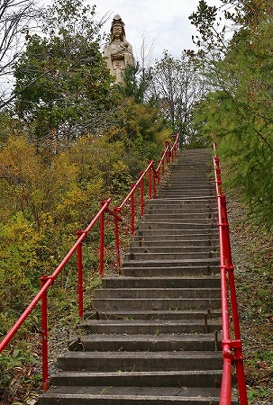

北海道珍寺探検隊（私こと小嶋独観＋妻こと小嶋独観子＋弟子こと大魔王君の幸せの黄色いハンカチ編成3人組、もちろん健さん役は俺だかんねっ！）、次の目的地に向かう。
札幌から車を飛ばすこと3時間。
延々と同じような風景が続く道を運転していると段々瞳孔が開き気味になり、意識がニルヴァーナの彼方へとトリップして来る。
さすがだぜ、北海道！
あまりにも果てしないドライブなので黄色いハンカチに於ける武田鉄矢こと大魔王君に運転を代わってもらいつつ東へ東へと向かう。
目指すは十勝。帯広市の近くにある某温泉だ。
とはいえ別に温泉に浸かりに来たわけではない。
温泉旅館の背後にいらっしゃる
「あの方」に謁見を果たすために十勝までやってきたのだ。
そのお方とは…
ああ、見えてきましたね。ひー、遠かったぜ。
赤い屋根の温泉旅館の背後の山の中に「何か」が立っているのがお判りいただけるだろうか？
そう、
金色の大観音なのだ。
この大観音サマに謁見すべくわざわざ他に見どころも用事もない（失礼！）十勝の地までやってきたのだ。
十勝川国際ホテル筒井、というのが温泉旅館の名前。
本来であれば、ここに宿泊した後、たっぷりと大観音を堪能するのが正しい拝観方法なのかも知れないが、まあ、それは勘弁してくれじゃ。
ちなみに各種ホテルサイトの口コミを見てみると…ま、いっか。
門の手前に見逃せないお方が！
…いっ、
一休さん？
見れば足元に缶コーヒーが奉納されてある。
一休さんってコーヒー飲むんだろうか？
それ以上に温泉の入り口に一休さんの像って一体どういう意味なんだろう？
あ、「一休み、一休み」、ということなのかなあ？
…謎が謎を呼ぶ案件であった。
しかも妙に男前な一休さんだし。
気を取り直して、ゲートを潜り大観音を目指す。
ホテルの駐車場を抜け、何となくうらぶれた感じの道を進む。
敷地こそホテルの駐車場を通らなければ行けないが、どうやらホテルとは直接関係ないのかな？
ホテルのサイトを見てみたが、大観音の「だ」の字も出てなかったもの。
駐車場を過ぎると途端に未舗装＆急勾配のハードな道になる。
おかげで大魔王君のコーヒーが盛大にとび跳ねて車内が大惨事に…。
大観音なのにでっかい鳥居がある。不思議だ。
鳥居を潜ると大観音周辺の全容が見えてくる。

天辺に大観音。その下に本堂（らしきもの）、その脇に小さな祠のようなものが並んでいる。
本堂（らしきもの）は鉄筋コンクリート造の味気ない建物で、まあこれも北海道らしいといえばらしい感じ。
ただ、
どう見ても人の気配がない。
仕方ないので本堂（らしきもの）の脇にある鳥居を潜り階段を登る。
返す返すも寺にこんなに大きな鳥居があるのが不思議だが、北海道ではあまり頓着しないのだろうか？んな事ないだろうなあ。
先ほどの一休さんがいたゲートが遥か下に見える。

階段を登っていくと段々観音様が間近に迫って来る。
一番ドキドキする瞬間だね。
ハイ！お出ましになられました！
十勝慈母観音様であられます！
十勝の開拓者の慰霊と青少年の健全育成と地域の平和を祈念して建立されたマルチタスクな観音様です。
吉野の金峯山寺の別院だとか。
高さは像高で十数メートルといったところ。
詳細は一切謎の大観音だ。
この大観音像、どっかで見たことあるなあ…。
ピコピコピコ…ピーン（脳内サーチでヒットした時の古典的な擬音です）！
福島県いわき市のいわき仏の里にあった
藤原慈母観音像にそっくりではないか。
ちなみにいわき仏の里は現在無くなってしまって、大観音は近所の湯の岳に移転してしまったのだが、その辺の顛末もそのうちレポートします。
行ったの7年前だけど。
ちなみに元藤原慈母観音、現在は湯の岳平和観音というのだが、かつては金色だった。
服の皺から抱いている赤ちゃんのポーズまで全く一緒。
同じ型から作られた観音像だな。恐らくFRP製なんだろう。
藤原慈母観音として建立されたのが昭和52年。
一方こちらの十勝慈母観音は昭和57年建立。
少し年下ですね。
やけにSFチックな屋根。
供え物は腐っていなかったので、比較的頻繁に参拝に訪れている人がいるようだ。
何だか寂しそうな佇まいだなあ。
台座の後ろには鉄の扉があり固く閉ざされていた。
中の様子は知る由もないが、何もなさそうな雰囲気だけはビンビン伝わってくる。
扉の前にはごみ袋が置かれていた。
再び、本堂に戻る。
中を覗くも、やはり廃墟になっているようだ。
隣に庫裏らしき住宅もあったがこちらも空き家状態。
つまりお寺自体が廃墟になっちゃってるみたい。
本堂の先には十二支護り本尊が。

この十二支護り本尊をブースに収める方式はこれまでも秋田の田沢湖大観音や北海道の北の京芦別、今はなき長崎の西海楽園といった昭和末〜平成頭辺りのバブル前後のレジャーランド系の寺院によく見られた。
このような珍寺デベロッパーや珍寺コンサル業者がいたのだろうか。
もし今でも需要があるのなら当方、珍寺コンサルタント業務とか全然請け負いますけど、如何でしょう？いい仕事しまっせ！
折角なので十二支護り本尊全てご紹介〜！
十二支護り本尊とは各干支の護り神なのだが、丑寅、辰巳、申未、戌亥が共通なので全部で8体の仏像がブースに納まっている。
そして最後にガラス張りの地蔵堂。
これがこの寺のすべてである。
正直言って札幌から3時間かけて行った割にはやや残念な感じだったが、これもまた修行。
今後この大観音を目指す皆様におかれましてはこのレポートを参考にして行くか行かないかをご判断いただけたら幸いである。
境内から先に小道が延びていた。
このまま吸い込まれそうな魅惑的な道だったが、多分何もないので行かなかったよ。
帰りに通ったこの道も吸い込まれそうでした…。
さあ、札幌に戻っか（トホホ…）！
参照サイト；ワンダーＦＵＬＬ TOKACHI